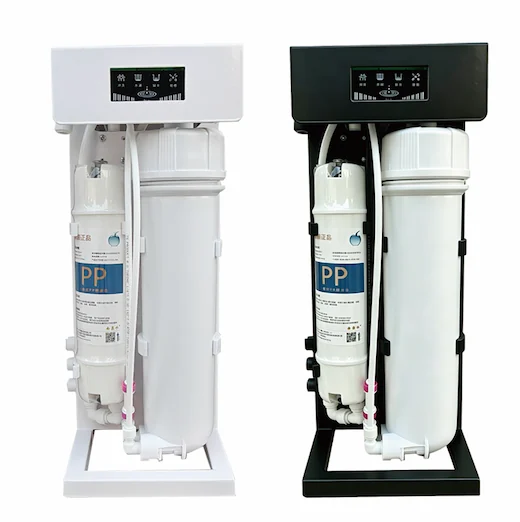
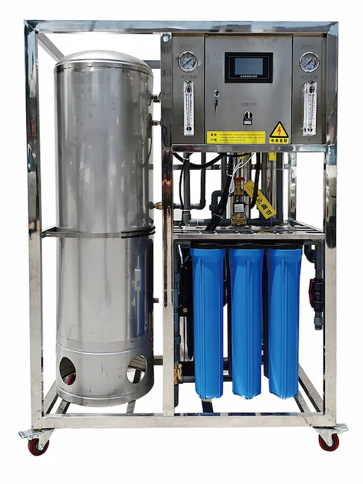
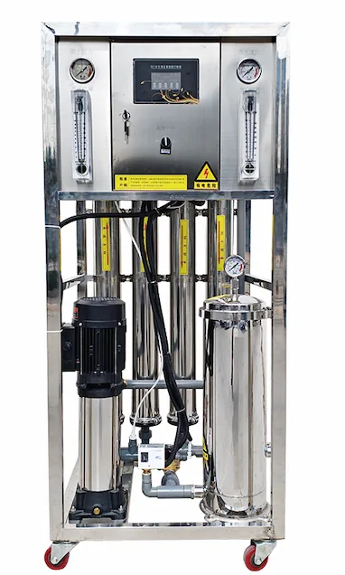
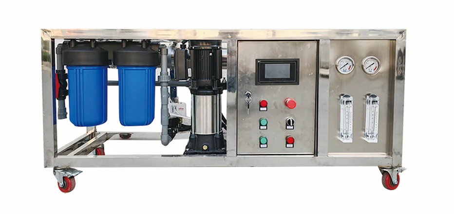

Custom 5/6/7 Stage RO Water Purifier
Custom 5/6/7 Stage RO Water Purifier — Ukuhlinzekwa ngqo efekthri kuma-oda enqwaba, nokwenza ngokwezifiso kwe-OEM/ODM, ukuhlolwa kwekhwalithi okuqinisekisiwe namadokhumenti okuthekelisa.
Bona Imininingwane →Umhlinzeki wezithengiso ze-PP, CTO. Kusukela ngo-1998.
Ukuhlinzekwa ngqo efekthri kuma-oda enqwaba, nokwenza ngokwezifiso kwe-OEM/ODM, ukuhlolwa kwekhwalithi okuqinisekisiwe namadokhumenti okuthekelisa.
Ukuhlinzekwa ngqo efekthri kuma-oda enqwaba, nokwenza ngokwezifiso kwe-OEM/ODM, ukuhlolwa kwekhwalithi okuqinisekisiwe namadokhumenti okuthekelisa.
Imibhalo yekhwalithi iyatholakala uma icelwa
FOB Shanghai/Ningbo · CIF · DDP · 50+
WhatsApp + email · OEM/ODM
Ukuhlinzekwa ngqo efekthri kuma-oda enqwaba, nokwenza ngokwezifiso kwe-OEM/ODM, ukuhlolwa kwekhwalithi okuqinisekisiwe namadokhumenti okuthekelisa.
Custom 5/6/7 Stage RO Water Purifier — Ukuhlinzekwa ngqo efekthri kuma-oda enqwaba, nokwenza ngokwezifiso kwe-OEM/ODM, ukuhlolwa kwekhwalithi okuqinisekisiwe namadokhumenti okuthekelisa.
Bona Imininingwane →
Industrial RO machine and seawater desalination equipment for B2B projects, with custom 1T, 2T, 3T, 5T or larger capacity, pretreatment tanks, pumps, valves and export packaging.
Bona Imininingwane →
Uhlelo oluncane naphakathi lwe-RO lokususa usawoti emanzini olwandle 10000-45000 ppm, 60-10000 L/h nokucushwa kwephrojekthi ye-OEM.
Thumela umbuzo
Umshini wamanzi we-RO wedeski onokupholisa nge-compressor: Ukuhlunga kwezigaba ezine: PP + CTO + T33 + RO, ngomthamo we-RO 100G; Ukupholisa nge-compressor kwamanzi okuphuza abandayo nokusebenza okuzinzile etafuleni; Umzimba omnyama ojwayelekile; eminye imibala, ilogo, ulimi lwephaneli nokupakisha kungenziwa ngokwezifiso ze-OEM/ODM; ikhiyi yezingane ikhona.
Thumela umbuzo
Umshini we-RO wokuhlanza amanzi ophathekayo nowenziwa ngokwezifiso: Isihlungi se-PP sediment esihlanganisiwe esixhuma ngokushesha + ulwelwesi lwe-RO 3013; 400G-800G; Amanzi kampompi kamasipala.
Thumela umbuzo
Uhlelo lohlaka RO oluhlanganisiwe olunamathangi esihlabathi nekhabhoni azenzakalelayo, ukuhlunga okunembile kanye no-1000-3000 L/h wamanzi ahlanzekile kumaphrojekthi e-OEM.
Thumela umbuzo
Uhlelo lohlaka RO oluhlanganisiwe olunamathangi esihlabathi nekhabhoni azenzakalelayo, ukuhlunga okunembile kanye no-1000-3000 L/h wamanzi ahlanzekile kumaphrojekthi e-OEM.
Thumela umbuzo
Uhlelo lohlaka RO oluhlanganisiwe olunamathangi esihlabathi nekhabhoni azenzakalelayo, ukuhlunga okunembile kanye no-250-1000 L/h wamanzi ahlanzekile kumaphrojekthi e-OEM.
Thumela umbuzo
Imishini ye-RO enezindlu eziyisithupha nezitsha zamanzi ahlanzekile: 20″ PP + 20″ CTO + 20″ PP + RO; 250-1000 L/ihora; Amanzi ompompi namanzi angaphansi komhlaba.
Thumela umbuzo
Imishini ye-RO enethangi elilodwa lokulungiselela amanzi: Ithangi lesihlabathi-nekhabhoni elizenzakalelayo + PP engu-20 intshi + PP engu-20 intshi + RO; 250-500 L/ihora; Amanzi ompompi namanzi angaphansi komhlaba.
Thumela umbuzo
Imishini ye-RO enethangi elilodwa nesihlungi sangaphambili se-PP esikhulu esingu-20 intshi: Isihlungi sangaphambili se-PP esikhulu esingu-20 intshi + RO; 250-500 L/ihora; Amanzi kampompi kamasipala.
Thumela umbuzo
Imishini encane ye-RO yokuhlanza amanzi: Ikhatriji yesihlungi se-PP sokubamba izinhlayiya + ikhatriji yekhabhoni esebenzayo + RO; 250-500 L/ihora; Amanzi kampompi kamasipala.
Thumela umbuzo
Imishini emaphakathi yezohwebo ye-RO yokuhlanza amanzi: PP engu-20 intshi + CTO engu-20 intshi + PP engu-20 intshi + RO; 250-500 L/ihora; Amanzi ompompi namanzi angaphansi komhlaba.
Thumela umbuzo
Imishini ye-RO yokuhlanza amanzi enesihlungi esinembayo: Isihlungi esinembayo + RO; 250-1000 L/ihora; Amanzi kampompi kamasipala.
Thumela umbuzo
Imishini elula ye-RO yokuhlanza amanzi: PP engu-20 intshi + CTO engu-20 intshi + PP engu-20 intshi + RO; 250-1000 L/ihora; Amanzi kampompi kamasipala.
Thumela umbuzo
Imishini ye-RO evundlile yokuhlanza amanzi: PP engu-10 intshi enobubanzi obukhulu + isihlungi esiyinhlanganisela ukotini-nekhabhoni engu-20 intshi enobubanzi obukhulu + RO; 250 L/ihora; Amanzi kampompi kamasipala.
Thumela umbuzo
Umshini wokuhlanza amanzi we-RO webhizinisi onokugeleza okuphezulu nezindlu ezinkulu: PP engu-10 intshi enobubanzi obukhulu + isihlungi esiyinhlanganisela ukotini-nekhabhoni engu-10 intshi enobubanzi obukhulu + RO×2; 800G-1600G; Amanzi kampompi kamasipala.
Thumela umbuzo
Imishini ye-RO ehlanganisiwe enethangi elilodwa yokuhlanza nokuhlinzeka ngamanzi: Iphampu lamanzi angahluziwe + ithangi lesihlabathi-nekhabhoni elizenzakalelayo + PP engu-20 intshi + RO + ithangi lamanzi ahlanzekile lensimbi engagqwali + iphampu yokuphakela amanzi elawulwa imvamisa; 250-500 L/ihora; Amanzi ompompi namanzi angaphansi komhlaba.
Thumela umbuzo
Uhlelo lohlaka RO oluhlanganisiwe olunamathangi esihlabathi nekhabhoni azenzakalelayo, ukuhlunga okunembile kanye no-1000-3000 L/h wamanzi ahlanzekile kumaphrojekthi e-OEM.
Thumela umbuzo
Isihlanzamanzi — Ukuhlinzekwa ngqo efekthri kuma-oda enqwaba, nokwenza ngokwezifiso kwe-OEM/ODM, ukuhlolwa kwekhwalithi okuqinisekisiwe namadokhumenti okuthekelisa.
Bona Imininingwane →
Ikhatriji yesihlungi — Ukuhlinzekwa ngqo efekthri kuma-oda enqwaba, nokwenza ngokwezifiso kwe-OEM/ODM, ukuhlolwa kwekhwalithi okuqinisekisiwe namadokhumenti okuthekelisa.
Bona Imininingwane →
Ikhatriji yesihlungi Big Blue — Ukuhlinzekwa ngqo efekthri kuma-oda enqwaba, nokwenza ngokwezifiso kwe-OEM/ODM, ukuhlolwa kwekhwalithi okuqinisekisiwe namadokhumenti okuthekelisa.
Bona Imininingwane →
Ikhatriji yesihlungi CTO — Ukuhlinzekwa ngqo efekthri kuma-oda enqwaba, nokwenza ngokwezifiso kwe-OEM/ODM, ukuhlolwa kwekhwalithi okuqinisekisiwe namadokhumenti okuthekelisa.
Bona Imininingwane →
Ikhatriji yesihlungi CTO — Ukuhlinzekwa ngqo efekthri kuma-oda enqwaba, nokwenza ngokwezifiso kwe-OEM/ODM, ukuhlolwa kwekhwalithi okuqinisekisiwe namadokhumenti okuthekelisa.
Bona Imininingwane →
Isihlungi sezimboni CTO — Ukuhlinzekwa ngqo efekthri kuma-oda enqwaba, nokwenza ngokwezifiso kwe-OEM/ODM, ukuhlolwa kwekhwalithi okuqinisekisiwe namadokhumenti okuthekelisa.
Bona Imininingwane →
Ikhatriji yesihlungi — Ukuhlinzekwa ngqo efekthri kuma-oda enqwaba, nokwenza ngokwezifiso kwe-OEM/ODM, ukuhlolwa kwekhwalithi okuqinisekisiwe namadokhumenti okuthekelisa.
Bona Imininingwane →
Ikhatriji yesihlungi — Ukuhlinzekwa ngqo efekthri kuma-oda enqwaba, nokwenza ngokwezifiso kwe-OEM/ODM, ukuhlolwa kwekhwalithi okuqinisekisiwe namadokhumenti okuthekelisa.
Bona Imininingwane →20,000+ m² · ISO 9001 · PP/CTO/UF/RO/SMT

Ulayini we-extrusion ozenzakalelayo · ukukhiqiza okuqhubekayo

I-CTO carbon block eshisiwe · i-activated carbon ye-coconut shell

Ukuhlanganisa i-inline filter ye-quick-connect

Kuhlolwe ngengcindezi ngaphambi kokuthunyelwa
Quick answers to help you make informed decisions about Yuchen Water products and services.
I-MOQ ivamise ukuqala ku-1,000 pcs kuma-cartridge ajwayelekile. Ama-oda e-OEM/ODM ancike ku-branding, packaging kanye ne-specification.
Imikhiqizo ekhethiwe ingahlinzekwa noma ihlolwe ngokwe-NSF/ANSI 42, 53 no-58. Amadokhumenti e-ISO 9001, CE, SGS ne-Halal ayatholakala uma eceliwe.
I-Yuchen Water yasungulwa ngo-1998 futhi ineminyaka engaphezu kuka-27 yesipiliyoni ekwenzeni ukuhlunga amanzi.
Izinto ezisesitokweni: izinsuku 7–10. Ukuphrinta kwe-OEM: izinsuku 20–25. Amaphrojekthi ama-purifier/dispenser: izinsuku 30–45 ngemva kokuqinisekisa.
Ifektri yethu ise-Yuanhua Town, Haining City, Zhejiang Province, China.
Sihlinzeka abadistribhutha, abangenisi nabathengi be-OEM emazweni angaphezu kuka-50.